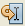

By default, the debugging session stops at the first line of the PHP code. You can disable stopping at the first line in Tools > Options (NetBeans Preferences on Mac) > PHP > Debugging. When the session stops, you can step through your lines of code using the following commands on the Debug menu or toolbar:
| Command | Shortcut | Description |
|---|---|---|
| Debug > Continue | F5 or | Runs the program until it reaches the next breakpoint or until the program terminates normally. |
| Debug > Step Over | F8 or | Executes one source line. If the source line contains a call, executes the entire routine without stepping through the individual instructions. |
| Debug > Step Into | F7 or |
Runs the program to the next line and pauses execution before any changes have been made to the state of the program. |
| Debug > Step Out | Ctrl-F7 or |
Executes one source line. If the source line is part of a routine, executes the remaining lines of the routine and returns control to the caller of the routine. The completed method call is highlighted in the Source Editor. |
| Debug > Run to Cursor | F4 or  | Runs the program to the cursor location in the Source Editor and pauses the program. The file you have selected in the Source Editor must be called from the main class of the main project. |